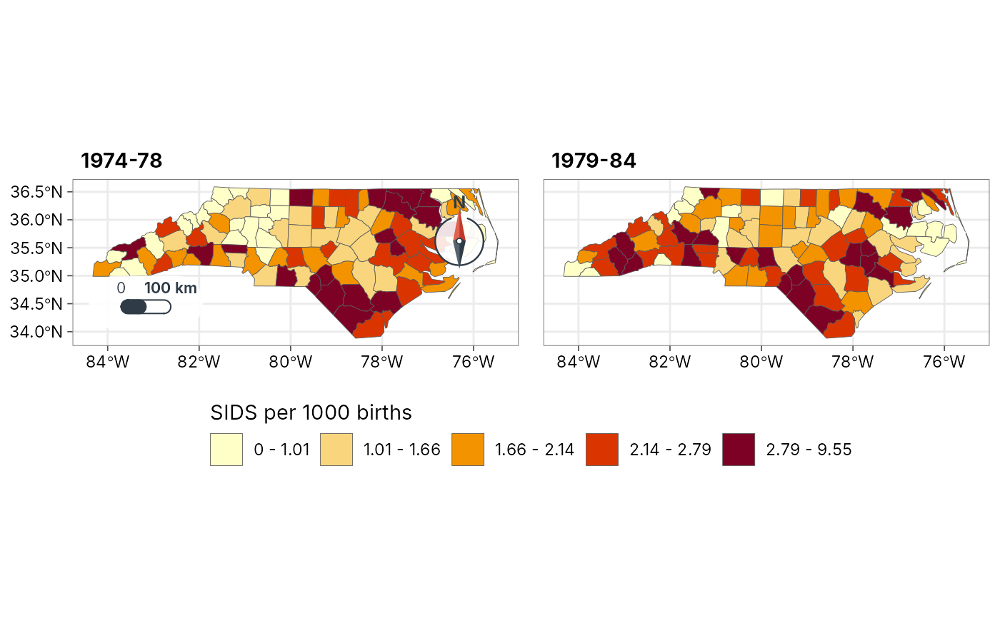
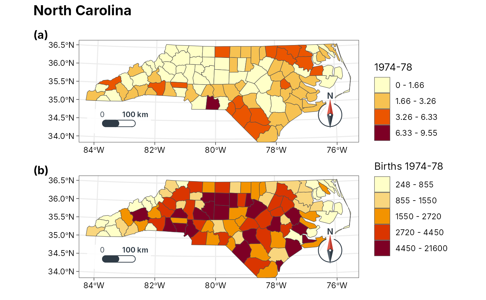

Multi-panel map layouts
geo-panels.RdFigures with more than one map, ready for a paper or report:
geo_panels()arranges maps (fromgeo_map(),geo_automap()or any ggplot) in a grid with panel tags such as(a),(b). Legends that are the same in every panel are collected into one.geo_facet_map()draws small multiples: one map per group (year, season, species) with one classification shared by all panels, so a colour means the same value everywhere, one legend, and the scale bar and north arrow in the first panel only.geo_inset()places a small map (for example a locator of the study area) inside a corner of a larger one.
All three need the patchwork package; the result is a patchwork object
that prints as one figure and saves with geo_save().
Usage
geo_panels(
...,
ncol = NULL,
nrow = NULL,
tags = c("a", "A", "1", "i", "I", "none"),
tag_prefix = "(",
tag_suffix = ")",
guides = c("collect", "keep"),
legend_position = c("right", "bottom"),
title = NULL,
subtitle = NULL,
caption = NULL,
widths = NULL,
heights = NULL
)
geo_facet_map(
data,
value,
by = NULL,
ncol = NULL,
n = 5,
style = c("quantile", "jenks", "equal", "pretty", "sd"),
palette = "YlOrRd",
legend_title = NULL,
title = NULL,
scale_bar = "pill",
north_arrow = "needle"
)
geo_inset(main, inset, location = "auto", size = 0.3)Arguments
- ...
Maps:
tmr_mapobjects fromgeo_map()or ggplots.- ncol, nrow
Grid size; by default as square as possible.
Panel tags:
"a"(default),"A","1","i","I", or"none".- tag_prefix, tag_suffix
Text around each tag; the default gives
(a),(b), ...- guides
"collect"merges legends that are the same in several panels into one;"keep"leaves a legend beside each panel.- legend_position
Where collected legends go:
"right"or"bottom". Legends kept per panel stay at the right of their panel.- title, subtitle, caption
Figure title, subtitle and caption.
- widths, heights
Relative widths of the columns and heights of the rows.
- data
An
sftable.- value
<
data-masking> Numeric column to map.- by
<
data-masking> Column that splits the data into panels. Alternatively give several value columns invaluewithc(), one panel per column.- n, style
Shared classification, passed to
geo_classify().- palette
Colour ramp: a name from
grDevices::hcl.pals()or a vector of colours.- legend_title
Legend title; defaults to the column name.
- scale_bar, north_arrow
Styles of the scale bar and north arrow, drawn in the first panel;
FALSEto leave them out.- main, inset
The large map and the small one.
- location
Where the inset goes:
"auto"(default) picks a corner free of the scale bar, north arrow and any legend inside the map, and of those the one hiding the least of the mapped features;"tr","tl","br"or"bl"names a corner; or two numbers give the inset's lower-left corner anywhere on the map, as fractions of the map panel (for examplec(0.05, 0.6)).- size
Width and height of the inset as a fraction of the main map.
Examples
nc <- sf::st_read(system.file("shape/nc.shp", package = "sf"), quiet = TRUE)
nc$`1974-78` <- 1000 * nc$SID74 / nc$BIR74
nc$`1979-84` <- 1000 * nc$SID79 / nc$BIR79
# Two periods, one classification, one legend
geo_facet_map(nc, c(`1974-78`, `1979-84`), n = 5,
legend_title = "SIDS per 1000 births")

# Any maps side by side, tagged (a) and (b)
a <- geo_automap(nc, `1974-78`)
b <- geo_automap(nc, BIR74, legend_title = "Births 1974-78")
geo_panels(a, b, ncol = 1, title = "North Carolina")
